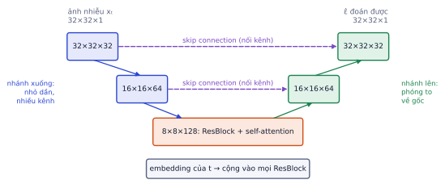
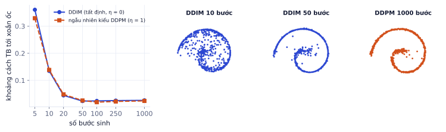
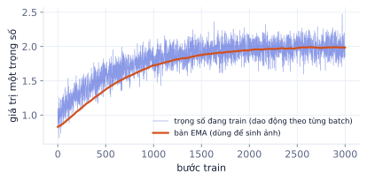

Giai đoạn P5 · Dự án Diffusion: tạo ảnh từ con số 0Tuần 10–30Có nội dung đầy đủcần học xong Bài 2
Giai đoạn 1 khử nhiễu điểm 2D bằng một MLP. Với ảnh, thuật toán giữ nguyên, nhưng mạng khử nhiễu phải hiểu cấu trúc không gian của ảnh: đó là U-Net. Bài này cũng giới thiệu DDIM, cách sinh ảnh với 50 bước thay vì 1000, cùng hai mẹo giúp train ổn định: lịch nhiễu cosine và EMA trọng số. Phần thực hành, bạn train DDPM sinh ảnh quần áo Fashion-MNIST.
Vì sao cần U-Net
Vì sao cần học
MLP ở GĐ1 nhận 2 con số. Một ảnh 32×32 có 1024 pixel, và pixel nào cũng liên quan tới hàng xóm của nó. Duỗi ảnh thành vector rồi đưa vào MLP thì mất hết thông tin "pixel nào nằm cạnh pixel nào", và số tham số bùng nổ. U-Net là kiến trúc chuẩn cho mọi model diffusion ảnh (DDPM, Stable Diffusion 1.x/2.x, SDXL), nên đọc được nó là đọc được phần lõi của các hệ thống đó.
Mạng khử nhiễu nhận ảnh nhiễu và trả về nhiễu dự đoán cùng kích thước. Nó cần hai loại thông tin cùng lúc:
Toàn cục: đây là áo hay giày, dáng tổng thể thế nào. Cần "nhìn" cả ảnh.
Cục bộ: đường viền, đường may ở từng pixel. Cần độ phân giải đầy đủ.
U-Net đáp ứng cả hai bằng hình chữ U:

U-Net cấu hình như phần thực hành (khoảng 4 triệu tham số). Nhánh xuống thu nhỏ ảnh và tăng số kênh; đáy chữ U có self-attention; nhánh lên phóng to lại; skip connection mang chi tiết từ trái sang phải.
Thành phần
Làm gì
Vì sao cần
Nhánh xuống (encoder)
conv + giảm kích thước một nửa mỗi mức, tăng số kênh
mỗi mức nhìn vùng rộng gấp đôi; ở 8×8, một ô "thấy" gần cả ảnh
Đáy chữ U
ResBlock + self-attention
attention cho mọi vùng nói chuyện với nhau (tay áo trái với tay áo phải)
Nhánh lên (decoder)
phóng to gấp đôi mỗi mức, giảm số kênh
trả về đúng kích thước ảnh gốc
Skip connection
nối (concat) đặc trưng nhánh xuống vào nhánh lên cùng mức
chi tiết sắc nét bị mất khi thu nhỏ được "chuyển thẳng" sang
Ví dụ từng bước
Đi theo kích thước một batch 4 ảnh xám qua U-Net ở phần thực hành (đã chạy với diffusers 0.42):
Nhánh lên đi ngược lại, nối skip ở mỗi mức, ra: (4, 1, 32, 32), đúng shape đầu vào.
Đây là lý do Fashion-MNIST 28×28 được đệm thành 32×32: 32 chia đôi nhiều lần vẫn chẵn, còn 28 → 14 → 7 thì không chia tiếp được.
Lỗi hay gặp
Quên skip connection (hoặc tự viết U-Net mà nối sai mức) thì model vẫn train được, loss vẫn giảm, nhưng ảnh sinh ra mờ, mất chi tiết: đúng dáng áo nhưng không có viền sắc. Khi ảnh sinh "đúng hình nhưng nhòe", kiểm tra skip connection đầu tiên.
Đưa bước t vào U-Net
Như GĐ1, model phải biết đang ở bước t nào. Cách làm trong U-Net:
t → vector sin/cos (time embedding, như GĐ1).
Qua một MLP nhỏ (2 lớp Linear + SiLU) thành vector đặc trưng thời gian.
Trong mỗi ResBlock, vector này được chiếu bằng một lớp Linear thành vector có độ dài bằng số kênh của block, rồi cộng vào feature map. Một số kênh × 1 × 1 cộng lên mọi pixel (broadcast).
Nhờ vậy mọi lớp đều biết mức nhiễu hiện tại: ở t lớn, các lớp tập trung vào dáng tổng thể; ở t nhỏ, tập trung vào chi tiết.
Thư viện diffusers có sẵn UNet2DModel:
importtorchfromdiffusersimportUNet2DModelmodel=UNet2DModel(sample_size=32,in_channels=1,out_channels=1,layers_per_block=2,block_out_channels=(32,64,128),down_block_types=("DownBlock2D","AttnDownBlock2D","AttnDownBlock2D"),up_block_types=("AttnUpBlock2D","AttnUpBlock2D","UpBlock2D"))x_t,t=torch.randn(4,1,32,32),torch.randint(0,1000,(4,))# batch 4 ảnh nhiễu và bước teps_hat=model(x_t,t).sample# x_t: (B,1,32,32), t: (B,) số nguyên -> (B,1,32,32)print(eps_hat.shape,f"{sum(p.numel()forpinmodel.parameters())/1e6:.2f} triệu tham số")
Kết quả khi chạyđã chạy sẵn cần PyTorch, diffusersMở trên Colab ↗
torch.Size([4, 1, 32, 32]) 4.02 triệu tham số
Trong thực hành, bạn dùng nó cho mạng; lịch nhiễu, vòng train và vòng sinh thì tự viết, y hệt GĐ1.
DDIM: sinh nhanh gấp 20 lần
Vì sao cần học
DDPM cần 1000 lần gọi U-Net cho một ảnh. Nếu mỗi lần mất 35 ms cho một batch, sinh một batch mất 35 giây; một app có 100 người dùng cùng lúc thì không chạy nổi. DDIM giảm còn 50 lần gọi (khoảng 1.75 giây) mà không cần train lại.
DDPM đi lần lượt từng bước vì mỗi bước gỡ một chút nhiễu rồi thêm nhiễu mới ngẫu nhiên. DDIM (Song và cộng sự, 2020) dùng cùng model đã train, nhưng thay quy tắc cập nhật bằng hai bước tất định, cho phép nhảy cóc từ t xuống một bước s nhỏ hơn bất kỳ:
x̂₀ = (xₜ − √(1−ᾱₜ)·ε̂) / √ᾱₜ 1. đoán ảnh sạch từ nhiễu dự đoán
x_s = √ᾱ_s · x̂₀ + √(1−ᾱ_s) · ε̂ 2. "thêm lại" đúng lượng nhiễu của bước s
Ý tưởng: ở mỗi bước, đoán ảnh sạch, rồi đặt nó trở lại mức nhiễu thấp hơn, dùng lại chính nhiễu đã đoán thay vì nhiễu mới. Khi bước sau đoán lại, x̂₀ được tinh chỉnh dần.
Ví dụ từng bước
Một bước DDIM nhảy từ t có ᾱₜ = 0.36 xuống s có ᾱ_s = 0.64. Ảnh hiện tại xₜ = 1.0 (một pixel), model đoán ε̂ = 0.25.
Không có số ngẫu nhiên nào: chạy lại với cùng xₜ luôn ra 1.217.
Chọn các bước nhảy
Với 50 bước DDIM, chọn 50 giá trị t cách đều trong 999 … 0 (ví dụ 999, 979, 958, …, 0) và nhảy lần lượt. Ở bước cuối, trả về luôn x̂₀.
importtorchT=1000alpha_bars=torch.cumprod(1-torch.linspace(1e-4,0.02,T),dim=0)# lịch nhiễu như GĐ1@torch.no_grad()defsample_ddim(model,n,steps=50):x=torch.randn(n,1,32,32)ts=torch.linspace(T-1,0,steps).round().long().tolist()fori,tinenumerate(ts):eps=model(x,torch.full((n,),t)).sampleab=alpha_bars[t]x0=(x-(1-ab).sqrt()*eps)/ab.sqrt()ifi==len(ts)-1:returnx0.clamp(-1,1)ab_s=alpha_bars[ts[i+1]]x=ab_s.sqrt()*x0+(1-ab_s).sqrt()*epsimgs=sample_ddim(model.eval(),n=2,steps=10)# model ở ô trên chưa train nên ảnh chỉ là nhiễu; ở đây chỉ kiểm tra chạy đúngimgs.shape,imgs.min().item(),imgs.max().item()
Thí nghiệm trên xoắn ốc 2D (model MLP từ GĐ1 train kỹ hơn), đo khoảng cách trung bình từ 2000 điểm sinh ra tới xoắn ốc gần nhất:

Chất lượng tăng nhanh tới khoảng 20–50 bước rồi gần như đi ngang: 1000 bước không tốt hơn 50 bước. Với 10 bước, nhiều điểm còn rơi vào giữa xoắn ốc. Tham số η (eta) nối hai thế giới: η = 0 là DDIM, η = 1 thêm nhiễu mới như DDPM.
Trên dữ liệu 2D đơn giản này, hai cách gần như bằng nhau. Với ảnh thật, bài báo DDIM cho thấy khi ít bước (10–20), bản tất định tốt hơn rõ rệt bản ngẫu nhiên. Đó là lý do DDIM và các sampler tất định nhanh hơn (DPM-Solver, Euler) là mặc định trong các thư viện hiện nay.
Hai tính chất hữu ích của sampler tất định
Cùng nhiễu ban đầu → cùng ảnh. Lưu seed là tái tạo lại được ảnh, sửa prompt một chút mà giữ seed thì bố cục gần như giữ nguyên (P5.4).
Nội suy mượt. Trộn dần hai nhiễu ban đầu z₁ và z₂ (dùng nội suy cầu "slerp" để giữ độ lớn của nhiễu) rồi sinh bằng DDIM, ta được dãy ảnh chuyển dần từ chiếc áo này sang chiếc áo khác.
Lỗi hay gặp
Nội suy tuyến tính giữa hai nhiễu. (z₁ + z₂)/2 có độ lớn nhỏ hơn nhiễu chuẩn khoảng √2 lần (hai vector ngẫu nhiên gần vuông góc nhau), model chưa từng thấy nhiễu "yếu" như vậy và sinh ra ảnh xám nhạt. Dùng slerp.
Lịch nhiễu cosine
Lịch tuyến tính phá ảnh quá nhanh: hệ số tín hiệu √ᾱ đã dưới 0.1 từ bước 674. Hơn 300 bước cuối gần như toàn nhiễu, model mất công học những bước không giúp gì.
Lịch cosine (Nichol & Dhariwal, 2021) định nghĩa thẳng ᾱ theo t:
Lịch cosine giữ tín hiệu lâu hơn và giảm đều: √ᾱ dưới 0.1 chỉ từ bước 936.
t
√ᾱ tuyến tính
√ᾱ cosine
250
0.72
0.92
500
0.28
0.70
750
0.06
0.38
Với ảnh nhỏ (32×32, 64×64), lịch cosine cho ảnh đẹp hơn rõ. Ảnh lớn thì ngược lại cần nhiều nhiễu hơn (ảnh lớn có nhiều pixel dư thừa, nhiễu ít thì vẫn "đoán được" ảnh), nên các model lớn chỉnh lịch theo độ phân giải.
EMA trọng số
Trong lúc train, trọng số dao động theo từng batch: batch nhiều áo thì nghiêng về áo, batch nhiều giày thì nghiêng về giày. EMA (exponential moving average, trung bình trượt hàm mũ) giữ một bản sao trọng số cập nhật chậm:
w_ema ← decay · w_ema + (1 − decay) · w decay thường 0.999 hoặc 0.9999

Mô phỏng một trọng số: bản đang train (xanh) dao động mạnh theo từng batch; bản EMA (cam) mượt, đi theo xu hướng chung. Ảnh được sinh bằng bản EMA.
Ví dụ từng bước
decay = 0.99, w_ema hiện tại 0.5, trọng số vừa cập nhật w = 1.5.
Mỗi bước, khoảng cách từ w_ema tới w chỉ còn 99%. Sau ln 0.5 / ln 0.99 ≈ 69 bước khoảng cách còn một nửa: EMA với decay 0.99 "nhớ" khoảng 100 bước gần nhất; decay 0.999 nhớ khoảng 1000 bước.
importcopy,torchema=copy.deepcopy(model).eval().requires_grad_(False)@torch.no_grad()defupdate_ema(ema,model,decay=0.999):forpe,pinzip(ema.parameters(),model.parameters()):pe.mul_(decay).add_(p,alpha=1-decay)# gọi update_ema(ema, model) sau mỗi opt.step(); sinh ảnh bằng ema, không phải model# thử: đổi trọng số model rồi cập nhật EMA 1 lần và 1000 lầnw=next(model.parameters());w_ema=next(ema.parameters())withtorch.no_grad():w.add_(1.0)# giả sử một bước train làm trọng số tăng 1update_ema(ema,model)print("sau 1 lần:",round((w-w_ema).abs().mean().item(),4))# EMA mới đi được 0,1% quãng đườngfor_inrange(999):update_ema(ema,model)print("sau 1000 lần:",round((w-w_ema).abs().mean().item(),4))# còn khoảng e^-1 ≈ 37%
Sinh ảnh bằng EMA quá sớm. Với decay 0.999, sau 200 bước đầu bản EMA vẫn chủ yếu là trọng số khởi tạo ngẫu nhiên, ảnh sinh ra toàn nhiễu dù model đang train đã khá. Trong 1–2 epoch đầu, so sánh cả hai bản, hoặc dùng decay tăng dần (một số thư viện có sẵn "EMA warmup").
Ghi nhớ: train một lần, sinh bằng nhiều cách. DDPM, DDIM và các sampler sau này đều dùng chung một model đoán nhiễu.
Tự kiểm tra nhanh
Mỗi lần gọi U-Net mất 35 ms cho một batch.
Tóm tắt bài và thuật ngữ
Chủ đề
Ý chính
U-Net
nhánh xuống (toàn cục) + nhánh lên (chi tiết) + skip connection; attention ở độ phân giải thấp
Đưa t vào
embedding sin/cos → MLP → cộng vào mọi ResBlock
DDIM
đoán x̂₀ rồi đặt lại ở mức nhiễu thấp hơn bằng chính ε̂; tất định; 50 bước ≈ 1000 bước DDPM
Lịch cosine
giữ tín hiệu lâu hơn, không phí các bước cuối
EMA
trung bình trượt của trọng số, dùng để sinh ảnh
Thuật ngữ
Nghĩa
U-Net
mạng hình chữ U: thu nhỏ rồi phóng to, có skip connection
encoder / decoder
nhánh xuống / nhánh lên
skip connection
nối đặc trưng giữa hai nhánh cùng độ phân giải
ResBlock
khối conv có đường tắt cộng đầu vào vào đầu ra
self-attention
mọi vị trí trong feature map nhìn nhau
DDIM
Denoising Diffusion Implicit Models, sampler tất định
sampler / scheduler
quy tắc cập nhật xₜ khi sinh
η (eta)
lượng nhiễu mới mỗi bước: 0 là DDIM, 1 giống DDPM
slerp
nội suy cầu, giữ độ lớn vector
cosine schedule
lịch nhiễu định nghĩa ᾱ bằng hàm cos²
EMA
trung bình trượt hàm mũ của trọng số
Ô tự chấm đã giải đúng0 / 4
Bài 1
Kích thước qua U-Net
tính tay
Ảnh Fashion-MNIST 28×28 được đệm thành 32×32. U-Net có 3 mức, giảm một nửa kích thước giữa các mức.
Lời giải
32 → 16 → 8. Đầu ra có cùng shape với đầu vào (1 kênh, 32×32) vì model đoán nhiễu cho từng pixel. Đệm lên 32 giúp chia đôi được nhiều lần mà không lẻ.
Bài 2
Một bước DDIM
tính tay
Model đoán x̂₀ = 1 và ε̂ = 0.5. Bước tiếp theo có ᾱ_s = 0.81.
Lời giải
√0.81·1 + √0.19·0.5 = 0.9 + 0.436·0.5 ≈ 1.118.
Bài 3
Tốc độ
tính tay
Mỗi lần gọi U-Net mất 20 ms cho một batch 64 ảnh.
Lời giải
1000 × 20 ms = 20 giây; 50 × 20 ms = 1 giây. Thời gian sinh tỉ lệ thuận với số lần gọi model, nên giảm số bước là cách tăng tốc trực tiếp nhất.
Bài 4
EMA
tính tay
w_ema = 1.0, trọng số đang train w = 2.0, hệ số 0.999.
Lời giải
0.999 + 0.002 = 1.001. Khoảng cách nhân 0.999 mỗi bước, giảm còn một nửa sau ln 0.5 / ln 0.999 ≈ 693 bước: EMA "nhớ" khoảng vài trăm đến một nghìn bước gần nhất.
Bài 5
DDPM hay DDIM
khái niệm
Bạn cần (1) sinh 10.000 ảnh để tính FID càng nhanh càng tốt, (2) tạo video ảnh chuyển dần từ chiếc áo này sang chiếc áo khác, (3) tạo nhiều biến thể khác nhau từ cùng một nhiễu ban đầu. Chọn DDPM hay DDIM cho từng việc và giải thích.
Lời giải
(1) DDIM với 50 bước: nhanh gấp 20 lần. (2) DDIM: tất định, nên nội suy nhiễu ban đầu cho chuyển cảnh mượt. (3) DDPM (hoặc DDIM với η > 0): nhiễu mới ở mỗi bước tạo các biến thể khác nhau từ cùng điểm xuất phát.
Train DDPM sinh ảnh Fashion-MNIST
Chạy trên Colab GPU T4, khoảng 20–30 phút.
Các bước
Tải Fashion-MNIST, đệm lên 32×32, chuẩn hóa về [−1, 1].
Lịch nhiễu tuyến tính T = 1000 như GĐ1 (thử cosine ở phần thử thách).